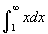
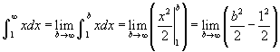
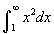
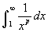
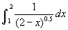

This device cannot display Java animations. The above is a substitute static image
1. A line
The applet initially shows a line. We want to know whether

has a value.
Symbolically, we would do the following:

This last limit does not exist because it is unbounded. We can see this from the applet, which shows a table of values for the integral for different values of
b. As
b gets bigger, so does the value. You can also see this from the graph, where it is clear that as
b gets bigger (try moving the
b slider), the area keeps increasing to infinity.
2. A parabola
Select the second example, showing a parabola. Like the previous example, as b increases, we add more and more area, so

is also unbounded. You can see that the integral of any power function, from 1 to infinity, is unbounded if the exponent is greater than 1. Reminder: numbers like 1.2345E6 are in scientific notation and is the same as 1.2345 x 10
6.
3. Reciprocal of a power function
Select the third example. Here we have taken the reciprocal of the power function.
Now notice that as b gets bigger, the area seems to be heading towards 1.
In fact, if we find the antiderivative and evaluate the limit, we get a value of 1 for this integral.
This integral is said to converge, while the examples we looked at above, where the limit did not exist, are said to diverge.
4. Reciprocal of a power function with different exponent
Select the fourth example, which uses a different exponent. Does this converge or diverge? What would you guess about bigger exponents?
5. Reciprocal of a power function with an exponent of 0.5
Select the fifth example, which uses an exponent of 0.5 (i.e., a square root). Does this converge or diverge?
6. Reciprocal of a power function with an exponent of 1
Select the sixth example which uses an exponent of 1. Does this converge or diverge? This gives rise to the p-test, which says for integrals like

the integral converges if
p > 1 and diverges if
p ≤ 1.
7. 1/(2-x)^0.5
Select the seventh example, where we want to know the value of

In this case, the problem is that at
x = 2, the integrand goes to infinity. We can treat this case using a limit, "sneaking up" on 2 from the left. The table of values shows what happens, and as you can see, the values seem to converge on 2 (which is the value of this integral).
8. 1/(2-x)^2
Select the eighth example, using an exponent of 2. Does this converge or diverge?
Explore
Select the ninth example. You can enter your own function, set a as you would like, zoom/pan the graph, and edit the b values in the table (just double click on a table cell to edit it; press Enter when done). Note that if you pick very large values for b (e.g., bigger than 1000), the applet may take some time to recompute the table values.
Other 'Integration Techniques' topics
(C) 2011 Copyright Math Open Reference.
All rights reserved